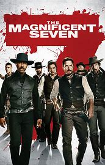
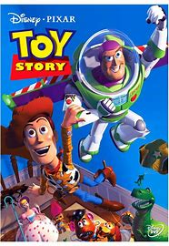
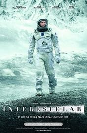
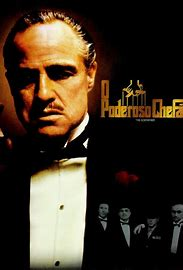
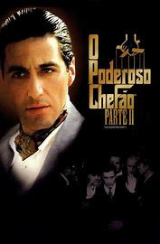
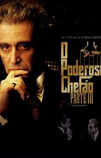
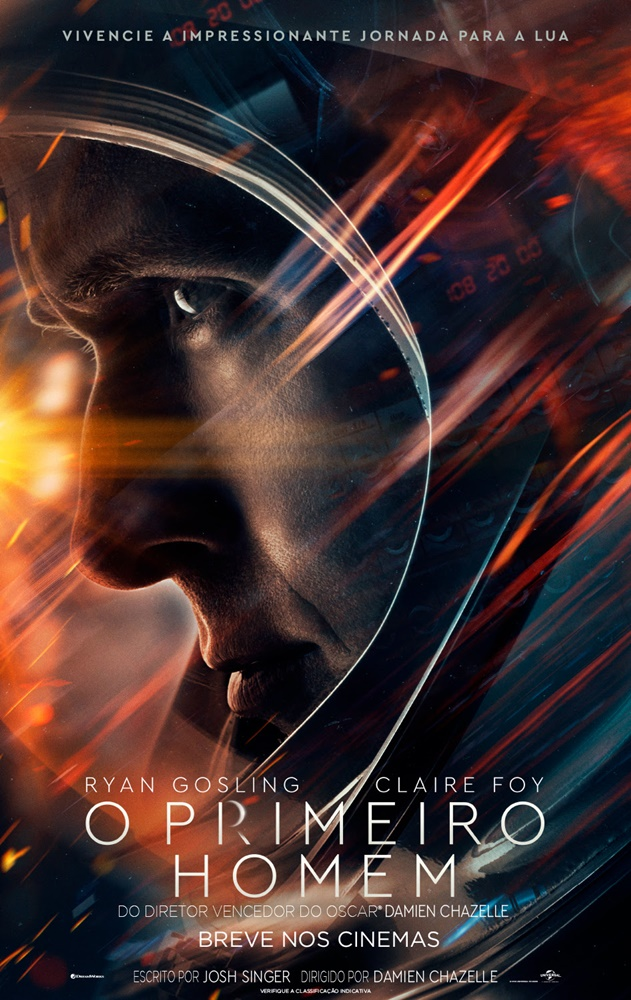

FILMES
- Apenas os melhores

7 Homens e 1 Destino
2016 · 2hora 12min
Western

Toy Story
1995 · 1hora 21min
Animação/Fantasia
Bastardos Inglórios
2009 · 2hora 33min
Guerra

Interstellar
2014 · 2hora 49min
Sci-Fi/Drama

The Godfather I
1972 · 2hora 55min
Crime/Drama

The Godfather II
1974 · 3hora 22min
Crime/Drama

The Godfather III
1990 · 2hora 42min
Crime/Drama

O Primeiro Homem
2018 · 2hora 18min
Bio/História
Koe No Katachi
2016 · 2hora 10min
Anime/Romance
O Irlandês
2019 · 3hora 29min
Crime/Ação